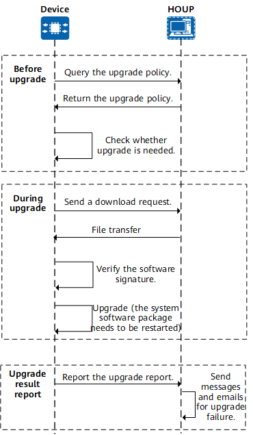

Understanding Smart Upgrade
Smart upgrade is an upgrade mode in which a device automatically selects a software version to be upgraded from the Huawei HOUP through HTTPS. It supports automatic or manual download of an upgrade basic software package or patch package or feature package for automatic or manual upgrade of a device. After a smart upgrade is complete, the upgrade result is automatically reported to the HOUP.
This function simplifies upgrade operations and enables customers to upgrade a system software version by themselves, greatly reducing device maintenance costs. In addition, the upgrade policy on the HOUP standardizes the upgrade path, which effectively prevents engineers from selecting an incorrect software version, thereby reducing the possibility of upgrade failures.
Smart upgrade supports the following modes:
- Scheduled smart upgrade
The time for a smart upgrade is specified on a device. The device automatically starts the smart upgrade at the specified time and reports the upgrade result to the HOUP. Scheduled smart upgrade supports specifying the upgrade time by year, month, or week.
- Manual smart upgrade
If scheduled smart upgrade is not configured or you want to manually perform a smart upgrade before the scheduled smart upgrade time is due, you can run the corresponding command to download the system software of the target version and manually perform the smart upgrade.
Figure 1 Flowchart for manually triggering a smart upgrade
To improve smart upgrade security, the following security measures are provided:
- Signature file of the basic software package or patch package or feature package
A signature file with the file name extension .asc is generated when a software package or patch package or feature package is archived on the HOUP. During a smart upgrade, a system software package and its signature file are automatically downloaded and the signature is verified.
- SSL Policy
A smart upgrade is performed based on the HTTPS protocol, which uses the SSL channel. The SSL policy is used on a device to describe the SSL channel configuration. In a smart upgrade, the CA certificate loaded in the SSL policy can be used to check whether the server is valid. On this basis, the common name (CN) or subject alternative name (SAN) can be further verified to ensure secure and reliable server connection. If the server validity does not need to be verified, the CA certificate is not required, but the SSL policy still needs to be specified.
To notify maintenance personnel of smart upgrade failures in a timely manner, the smart upgrade function allows you to configure contact information. When the upgrade failure result is reported to the HOUP, the reported message contains the contact information of the maintenance personnel. The HOUP sends an email to the maintenance personnel for subsequent handling.

The configured contact information is used only for emergency contact when the version upgrade fails. When the smart upgrade function is not required, delete the contact information immediately. When the administrator clears the device configuration file, the contact information is also deleted.
The device encrypts the contact information and reports it to the HOUP through HTTPS. During this process, the device and HOUP may obtain the contact information for authorized purposes. To ensure that contact information is fully protected, users should define privacy policies and take effective security measures in accordance with relevant country-specific laws and regulations.